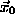
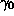
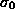
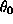

In this section, we establish error bounds associated with replacing a collection of basis functions with a single function. Generally, given some collection S of same-signed vortices, one would like to replace it with a single element with parameters

,
,
, and
. As will be shown in a later subsection, S should contain only same-signed vortices because the error estimate makes use of an 0 mean property to reduce an arbitrary difference to a pairwise difference. One of the simplest techniques is to equate moments. By equating the zeroth moment, both first moments and all three individual second moments, one can completely determine all the parameters for the post-merger element.